Verona
Fognature pulite,senza sorprese.
Spurgo pozzi neri e fosse biologiche, Pulizia vasche di decantazione, Lavaggio tubi e impianti fognari.
Richiedi un preventivo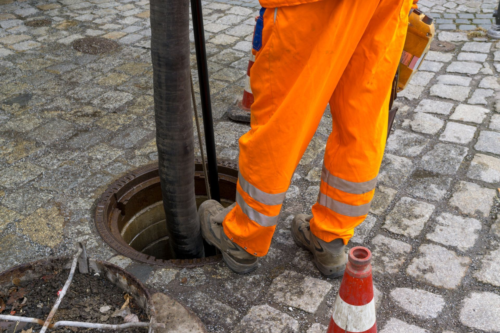
L'azienda
Pozzi Neri Fasoli lavora da Verona: spurgo pozzi neri e fosse biologiche, pulizia vasche di decantazione e lavaggio tubi e impianti fognari, per clienti pubblici e privati del territorio veronese.
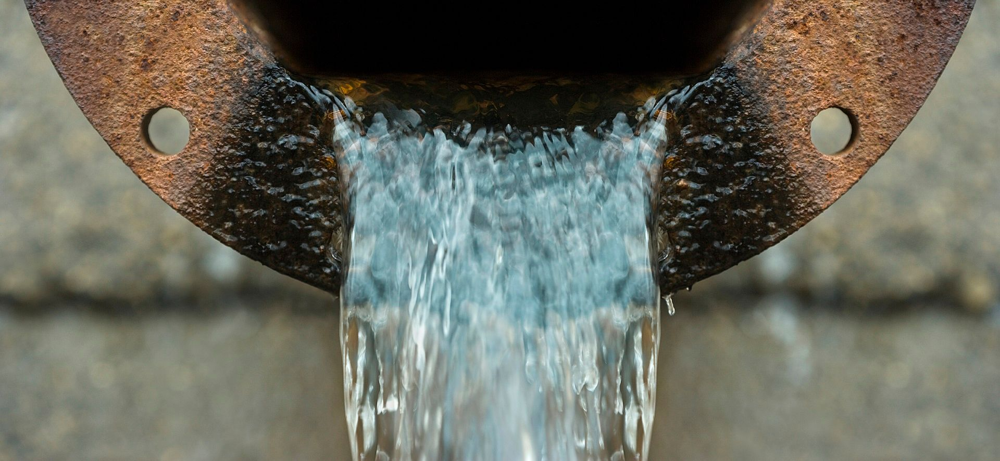
Servizi
Tutto il servizio, un interlocutore.
Per comuni, aziende e privati di Verona.
Spurgo pozzi neri e fosse biologiche
Svuotamento e pulizia di fosse biologiche, Imhoff e degrassatori.
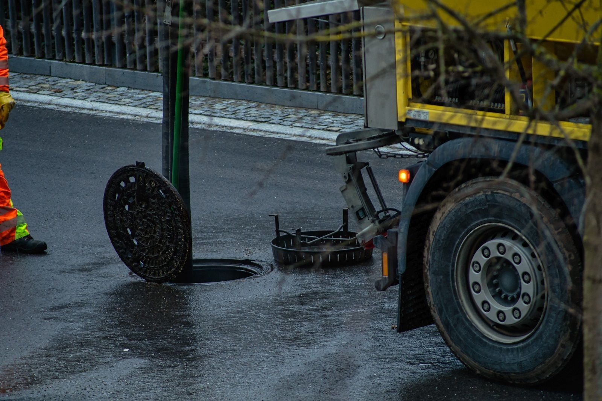
Pulizia vasche di decantazione
Pulizie e sanificazioni di ambienti e impianti, con prodotti e procedure certificati.
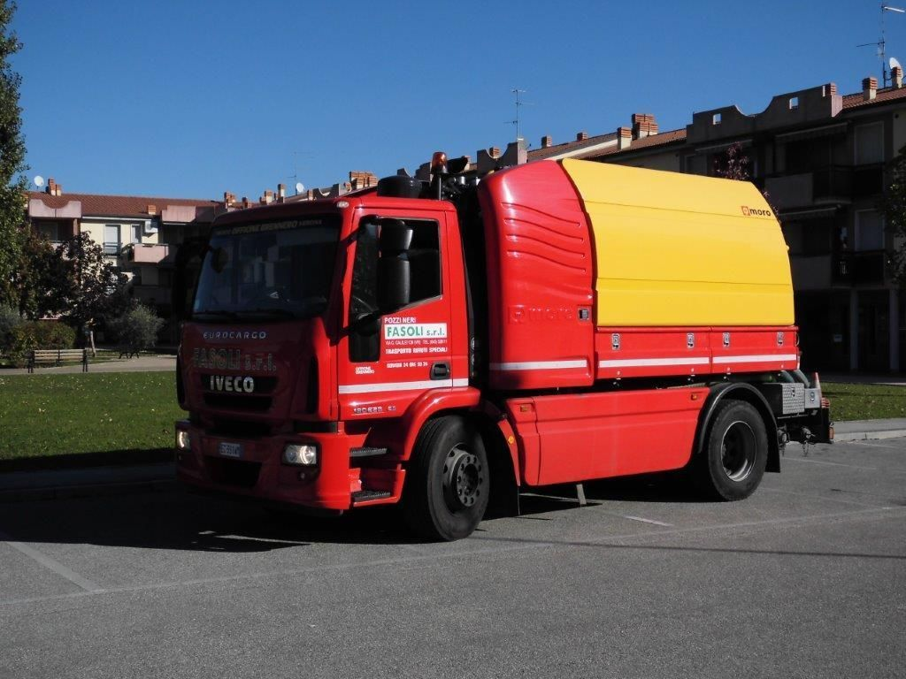
Lavaggio tubi e impianti fognari
Spurgo e pulizia di fosse, pozzetti e condotte, con mezzi attrezzati e smaltimento autorizzato di quanto aspirato.
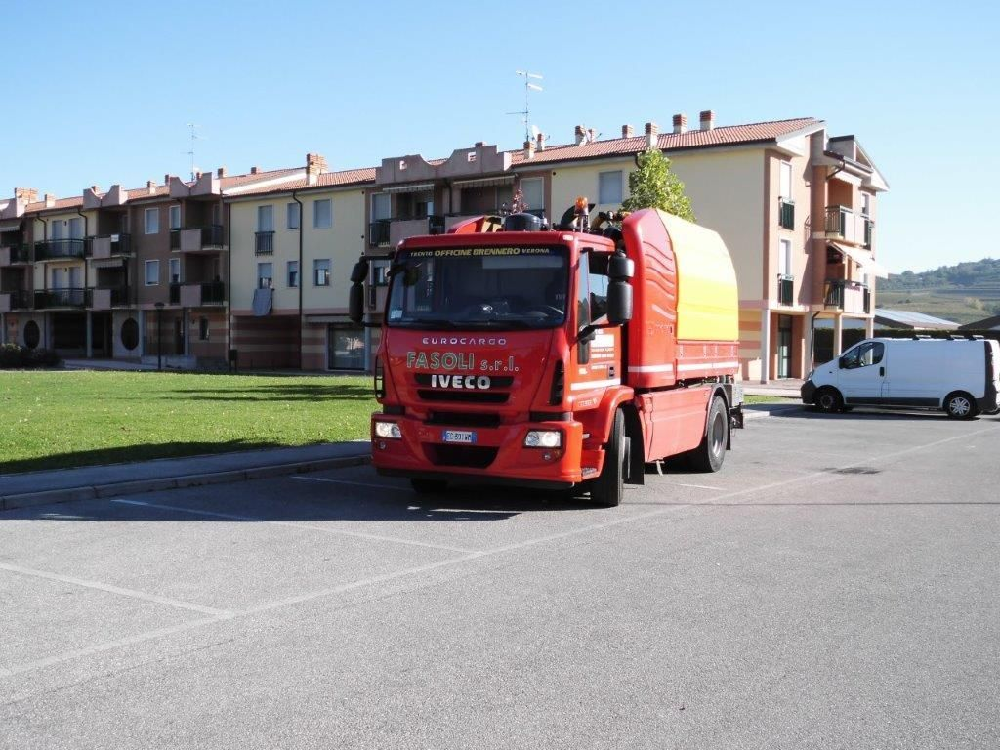
Videoispezioni
Ispezione delle condotte con telecamera: si vede il problema prima di scavare.
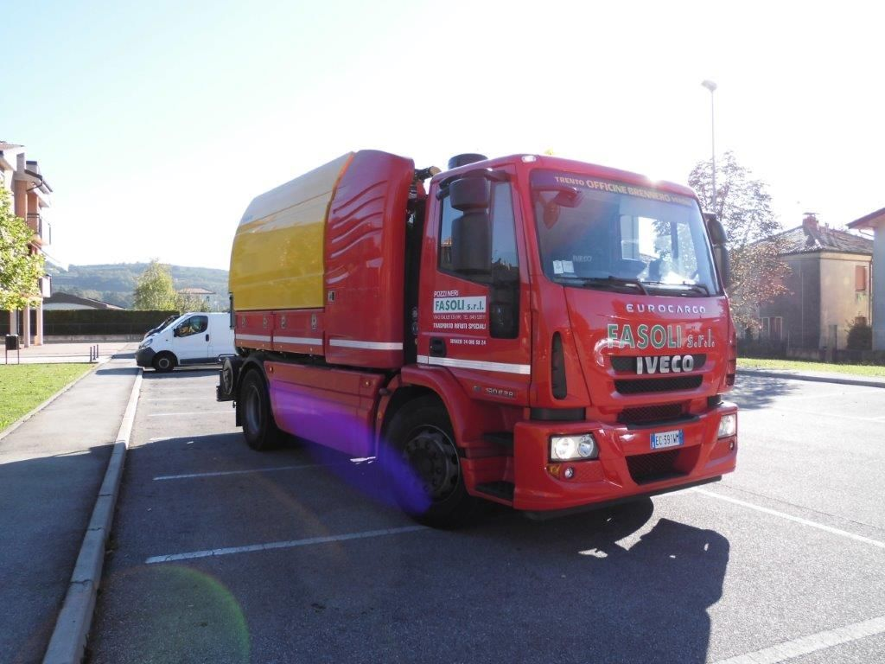
Servizi in abbonamento
Spurgo e pulizia di fosse, pozzetti e condotte, con mezzi attrezzati e smaltimento autorizzato di quanto aspirato.
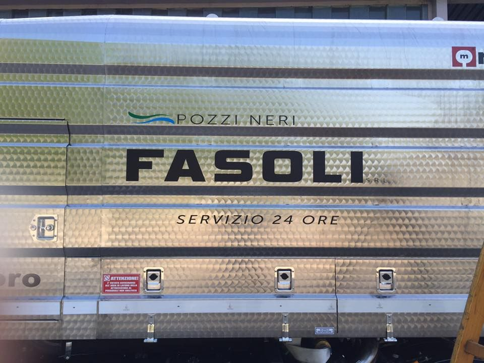
Spurgo fosse Imhoff
Svuotamento e pulizia di fosse biologiche, Imhoff e degrassatori.
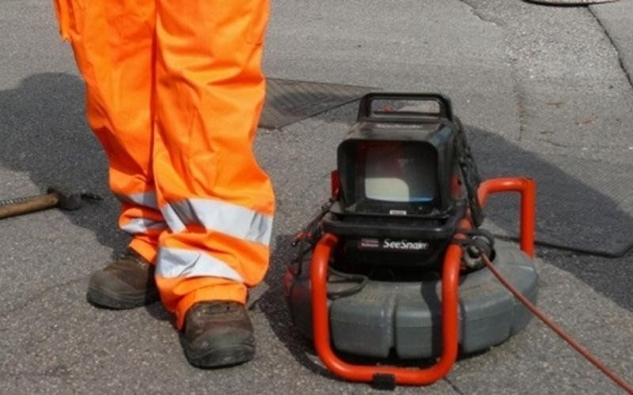
Pronto intervento antinquinamento
Spurgo e pulizia di fosse, pozzetti e condotte, con mezzi attrezzati e smaltimento autorizzato di quanto aspirato.
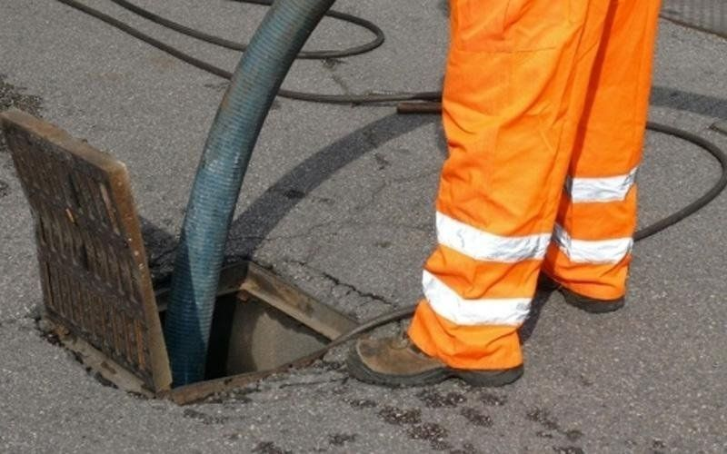
Come lavoriamo
Ogni passaggio, tracciato.
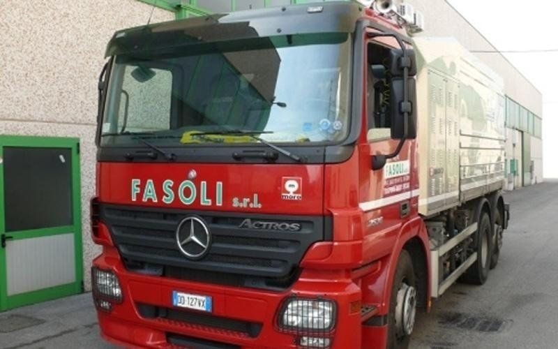
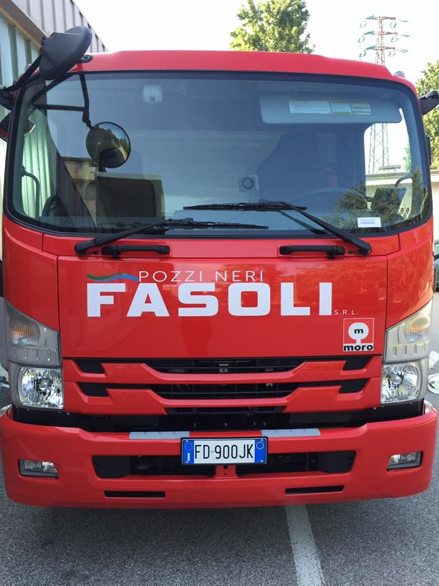
Fase 01
Chiamata
Ci dite dove e cosa: fossa, pozzetto, condotta, urgenza.
Fase 02
Sopralluogo
Valutiamo accesso, volumi e mezzo adatto.
Fase 03
Intervento
Aspirazione, lavaggio e, se serve, video-ispezione.
Fase 04
Trasporto
Il refluo va a un impianto autorizzato, con formulario.
Fase 05
Documenti
Vi restano i documenti di trasporto e smaltimento.
Lavora con noi
Autisti, operatori, tecnici: cerchiamo persone che conoscono il territorio.
Mandateci il vostro curriculum: lo leggiamo tutto, e vi richiamiamo.
Contatti
Un preventivo, senza giri.
Enti, aziende e privati: indicateci il servizio e la zona, vi rispondiamo con tempi e preventivo.